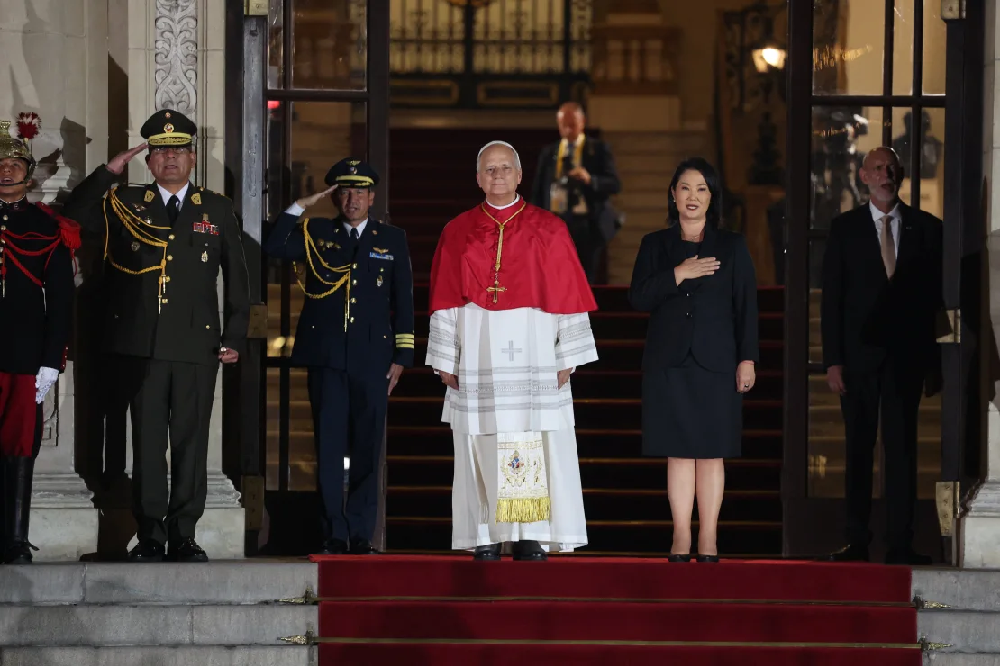
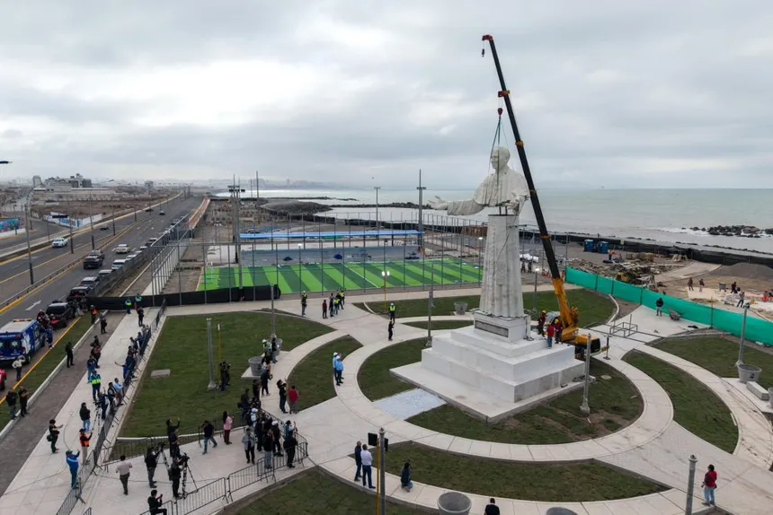

El papa León XIV llega a Perú, su patria adoptiva
Redacción | Equipo de Cultura | 11 Noviembre 2026

El papa León XIV aterrizó el 11 de noviembre en la Base Aérea del Callao, procedente de Argentina, para iniciar su primera visita apostólica a Perú desde su elección. Es la última escala de su gira por Sudamérica, que antes pasó por Uruguay y Argentina.
El país tiene un significado especial para él: aquí vivió más de veinte años, se nacionalizó y fue obispo de Chiclayo entre 2015 y 2023. Según medios internacionales, unos tres millones de personas salieron a las calles a recibirlo.
León XIV es el tercer papa en visitar Perú. Su recorrido estaba previsto por Lima, Chiclayo, Cusco y Pucallpa, con cuatro celebraciones litúrgicas multitudinarias.
Inauguran en Perú la estatua más grande dedicada a León XIV
Redacción | Equipo de Cultura | 9 Noviembre 2026

A pocos días de la llegada del pontífice, se inauguró en el país la que se presenta como la estatua más grande dedicada a León XIV, en medio del fervor por su visita.
Hallan embarcación histórica en el océano
Laura Gómez | Corresponsal de Cultura | 24 Mayo 2026

Un equipo de arqueólogos submarinos ha descubierto los restos de un galeón español del siglo XVII frente a las costas de Cádiz. El hallazgo, calificado como "exclusivo" por los expertos, podría revelar nuevos datos sobre las rutas comerciales de la época.
El pecio se encuentra a 40 metros de profundidad y, según las primeras imágenes captadas por robots submarinos, conserva gran parte de su estructura y una carga de monedas de oro y plata que será estudiada en los próximos meses.